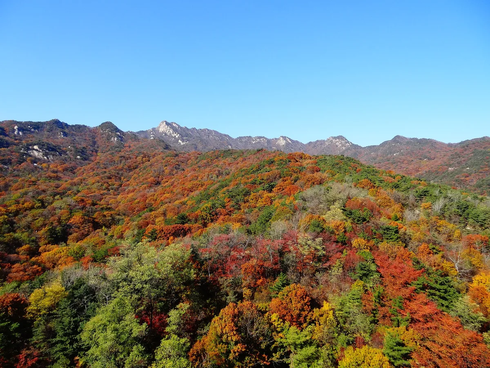
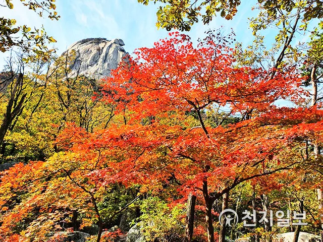
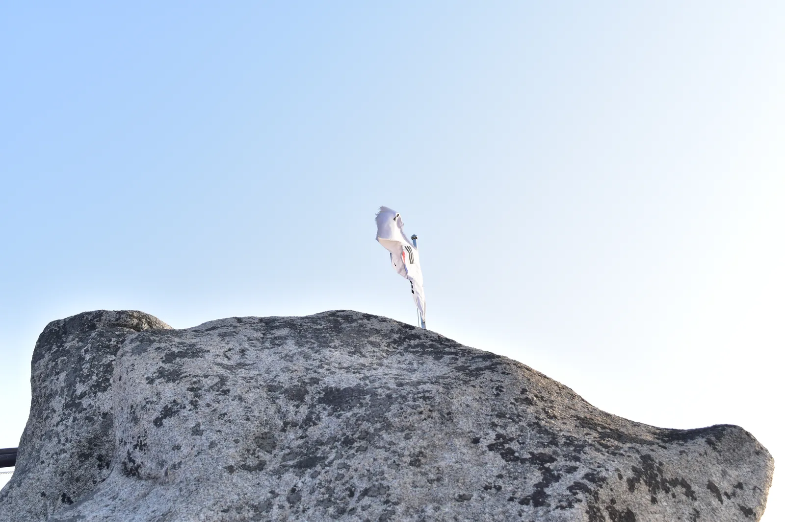
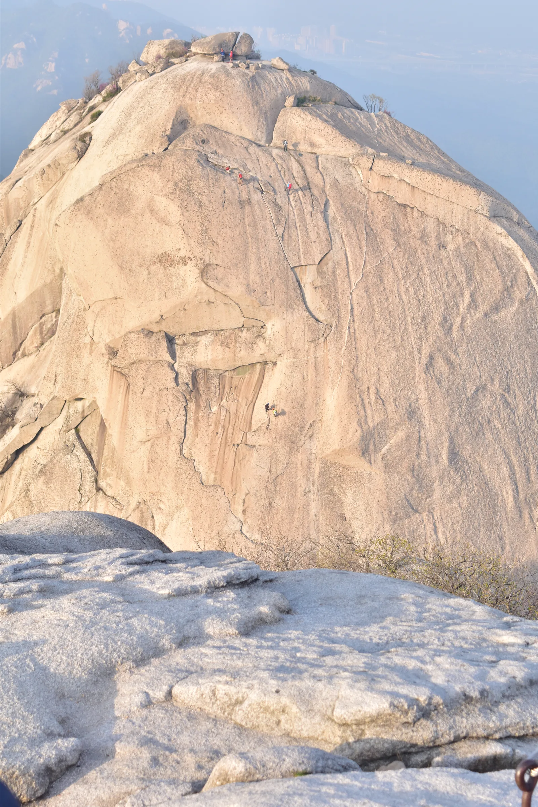

▲ 단풍철 북한산. 서울 도심에서 가깝지만 등산로 입구까지의 접근은 생각보다 간단하지 않다 ⓒ CarPrism
북한산국립공원은 서울 도심 한복판에 있어 지하철로 쉽게 갈 수 있는 산으로 알려져 있다. 틀린 말은 아니지만, 실제로 등산로 입구까지 걸어본 사람은 다른 이야기를 한다. 우이동역에서 도선사까지는 도보로 약 1시간이다. 그래서 상당수 등산객은 역에서 내려 곧장 택시로 갈아탄다.
1. 지하철로 다 된다는 착각

▲ 북한산 능선. 정상부까지는 지하철에서 상당한 거리를 더 이동해야 한다 ⓒ CarPrism
북한산은 불광역, 구파발역, 수유역 등 여러 지하철역에서 도보 진입이 가능하다고 소개된다. 그런데 이 '도보 진입 가능'이라는 표현이 실제 거리감을 가리는 경우가 많다. 우이동 코스만 봐도 북한산우이역에서 도선사까지 약 1시간을 걸어야 하고, 도선사 입구 정류장에서 우이탐방지원센터까지도 약 1.8km가 더 남아 있다. 등산객들이 역에서 택시로 갈아타는 것이 괜한 선택이 아니다.
2. 코스별 진입로 — 어디로 갈지부터 정한다
| 코스 | 진입 거점 | 비고 |
|---|---|---|
| 우이동 | 도선사 주차장 | 백운대·진달래능선 방면, 역에서 도보 1시간 또는 택시 |
| 정릉 | 정릉탐방지원센터 | 대동문·용암문·백운대 방면 |
| 북한산성 | 북한산성 제1·2주차장 | 대서문·중성문 방면 |
자차라면 처음부터 목적 코스에 맞는 주차장을 정하고 출발하는 것이 중요하다. 코스마다 진입로가 완전히 다르기 때문에, 잘못된 주차장에 세우면 등산로 입구까지 다시 상당 거리를 이동해야 하는 상황이 생긴다.
3. 주차요금 — 시간이 쌓이면 가산되는 구조

▲ 북한산 백운대 정상. 등산 시간이 길어질수록 주차요금도 함께 늘어난다 ⓒ Wikimedia Commons (CC BY-SA 3.0)
북한산성 제1·2주차장은 2021년 6월부터 시간별 가산요금제로 운영되고 있다. 소형차 기준 최초 1시간 1,100원, 이후 10분마다 250~300원이 추가되며 주말에는 단가가 더 높다. 정상까지 다녀오는 등산이 보통 4~6시간 걸린다는 점을 감안하면, 하루 주차비가 1만 원을 넘길 수 있다는 계산이 나온다.
참고 입장료는 없지만 주차비는 시간에 비례한다. 등산 시간이 길어질수록 비용이 늘어나는 구조이므로, 당일 왕복 시간을 미리 가늠해두는 것이 도움이 된다.
4. 단풍 절정 시기

▲ 북한산 인수봉의 화강암 암벽. 가을이면 이 주변 능선이 단풍으로 물든다 ⓒ Wikimedia Commons (CC BY-SA 3.0)
2025년 기준 북한산의 첫 단풍은 10월 중순에 시작됐고, 가장 화려한 절정기는 11월 첫째 주로 예상됐다. 2026년에도 비슷한 흐름이 이어질 가능성이 크다. 절정기 주말에는 주요 주차장이 오전 중 일찍 채워지므로, 이른 시간 도착이 여전히 유효한 전략이다.
5. 정리
체크포인트
- 지하철역에서 등산로 입구까지는 생각보다 멀다. 우이동은 도보 약 1시간이다.
- 코스별로 진입 거점(도선사·정릉·북한산성)이 다르므로 목적지를 미리 정해야 한다.
- 주차요금은 시간별 가산제다. 등산 시간이 길수록 비용도 늘어난다.
- 2026년 절정은 11월 첫째 주 전후로 예상된다.
문의는 북한산국립공원사무소 02-909-0497, 도봉사무소 031-828-8000이다.